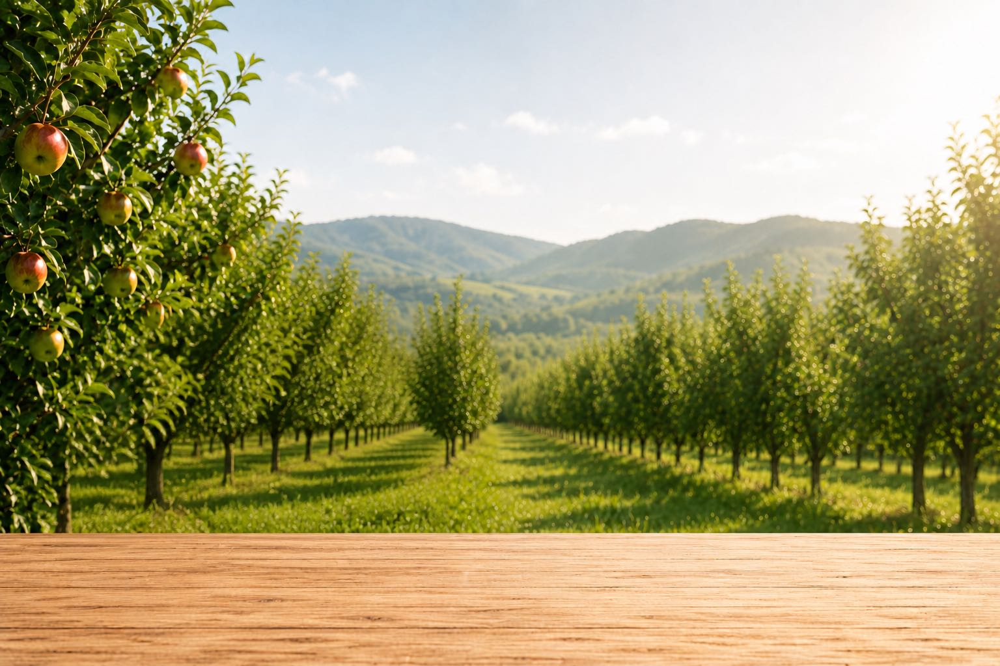
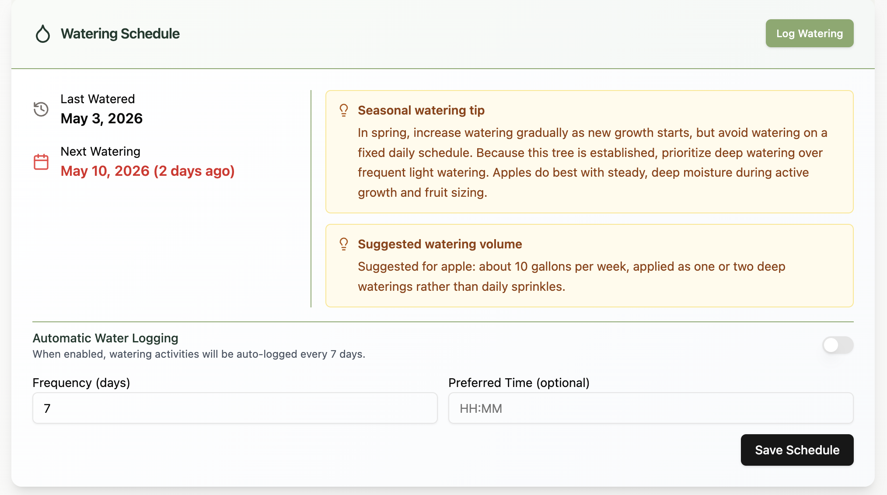

01
Know every tree.
Record varieties, planting details, health, growth, notes and care history. Search and filter your orchard, then open the record you need without digging through a spreadsheet.
Explore tree managementOrchard management, without the spreadsheets
Track every tree, schedule care, map your orchard, record field work, and see what’s happening across your operation.

Record varieties, planting details, health, growth, notes and care history. Search and filter your orchard, then open the record you need without digging through a spreadsheet.
Explore tree managementMap individual trees, rows and fields so your digital orchard matches the one outside—and the right record is always close at hand.

Watering. Fertilizing. Pruning. Spraying. Inspections. Harvests. Keep the details somewhere more useful than your memory.
Explore activity trackingSmart scheduling helps you water the right trees at the right time—so nothing gets missed.
Stop trying to remember who got watered.
Explore irrigation tools
How it works
Add your property and basic details.
Build the tree records that match your orchard.
Log care, monitor health, and build your history.
Built for what comes next
Whether you’re planting your first orchard or managing thousands of trees, RootedField keeps the same simple workflow.
Simple pricing
Choose the plan that fits your orchard today. Upgrade as your operation grows.
Free
For getting started with a small number of trees.
Pro
More capacity and the full orchard toolkit.
Team Pro
For larger orchards and growing teams.
Paid plans include a 14-day free trial. See full plan details
You can create your orchard and begin adding tree records in minutes. Start with the trees you need most, then build from there.
Yes. RootedField supports individual tree records, GPS locations, fields, health information, notes, and care history.
Yes. RootedField is web-based and designed to work on phones, tablets, and desktop computers.
Yes. Team management is available on paid plans. Pro includes one seat, while Team Pro includes five; additional users are available for either plan.
Paid plans include a 14-day free trial, and no credit card is required to get started. A Free plan is also available.
Leave the spreadsheet behind
Put your trees, field work, schedules, and orchard history in one place.